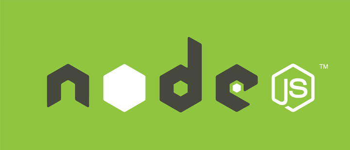
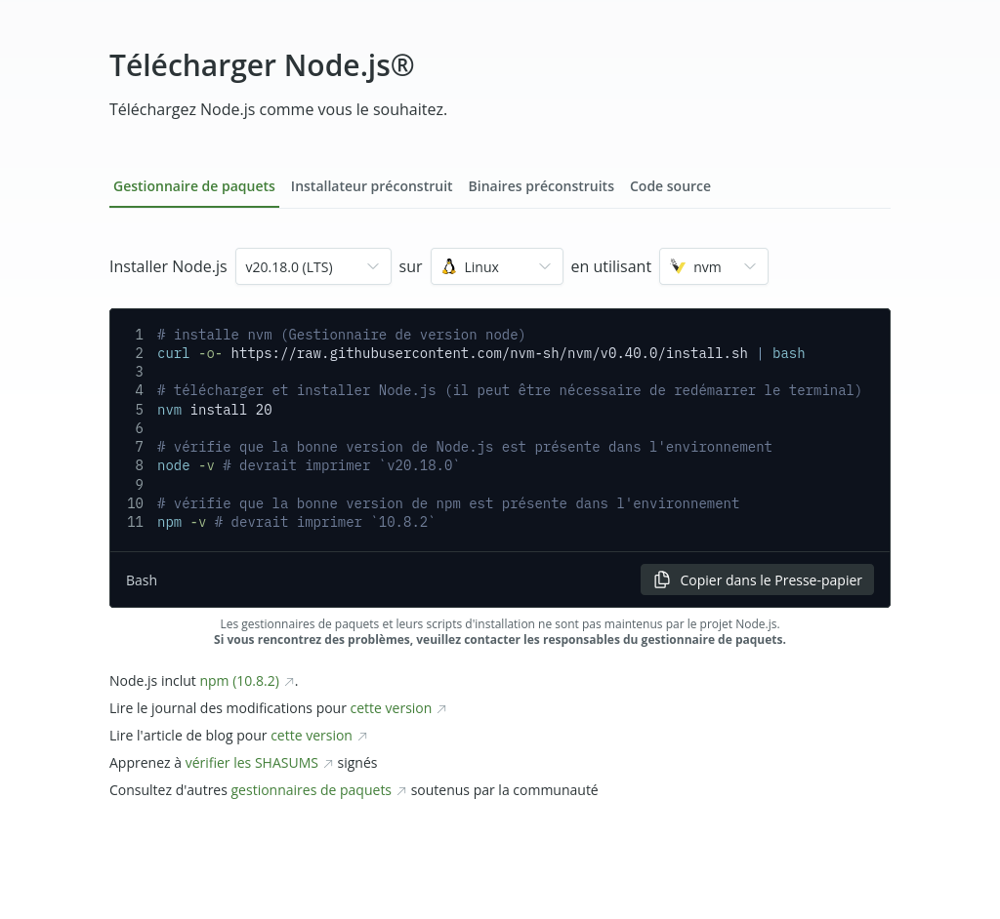
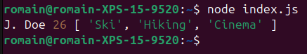
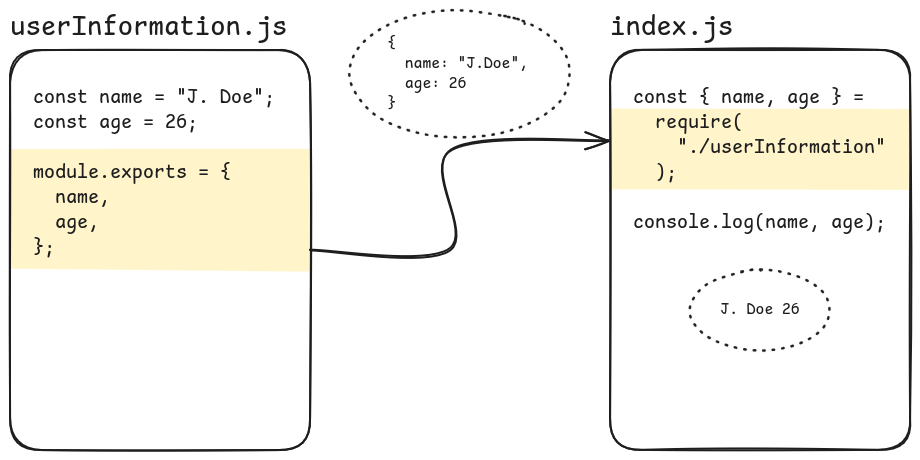
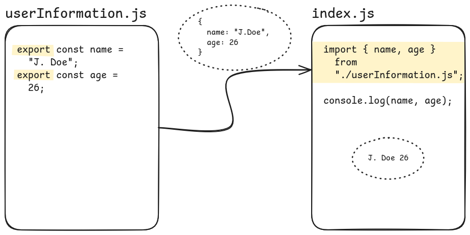
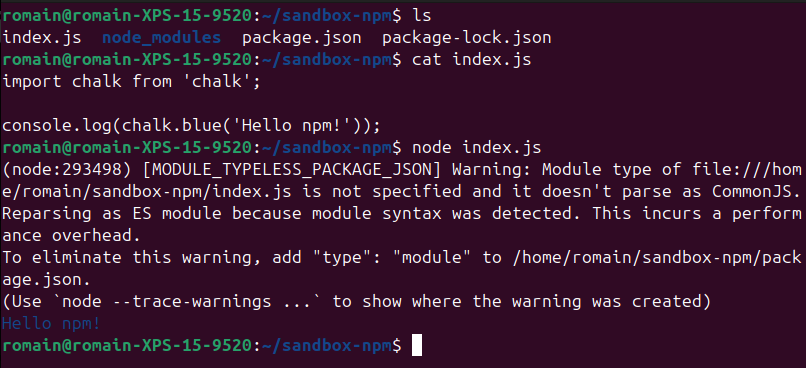

Node 01 - 👩🏫 Introduction à Node.js et npm
Objectifs
- Comprendre ce qu'est Node.js et pourquoi l'utiliser.
- Installer Node.js.
- Découvrir ce que sont les paquets/modules et leurs avantages
- Utiliser NPM de manière basique afin d'utiliser une dépendance externe dans une application.
Introduction
Node.js (parfois appelé simplement Node) est un environnement d'exécution JavaScript développé par Ryan Dahl en 2009.
Node permet d'exécuter du JavaScript en dehors d'un navigateur web, ce qui permet aux développeurs de programmer des applications JavaScript tournant dans presque tous les environnements (serveurs, objets connectés, robots, etc.).
Grâce à une collection de "modules" gérant des fonctionnalités de base (gestion des requêtes HTTP, accès au système de fichiers, etc.), nous pouvons écrire toutes sortes d'applications avec JavaScript et Node, telles que :
- des serveurs Web
- des services Web (APIs)
- des scripts d'automatisation
- des outils réseau
- des applications en temps réel (chat, jeux, etc.)
- ...
Node.js présente plusieurs avantages par rapport à d'autres technologies :
- Asynchronisme et modèle non bloquant : Node.js utilise un modèle événementiel non bloquant, ce qui le rend très efficace pour gérer de nombreuses connexions simultanées.
- Écosystème riche : NPM (Node Package Manager) permet d'accéder à des milliers de bibliothèques et outils prêts à l'emploi.
- Polyvalence : Avec Node.js, nous pouvons créer aussi bien des applications backend, des outils en ligne de commande que des scripts d'automatisation.
- Large communauté : De nombreux développeurs contribuent activement à l'évolution de Node.js et à la création de nouveaux modules.

Sommaire
Installation
Pour installer node, suis ce lien vers le site officiel :

Sélectionne ton système d'exploitation entre Windows, macOS et Linux. Reste sur une version LTS et suis les instructions indiquées.
Si tu as un doute, fais-toi accompagner pour cette étape.
Une fois l'installation terminée, vérifie que Node.js et NPM sont bien installés en exécutant les commandes suivantes :
node -v # Vérifie la version de Node.js
npm -v # Vérifie la version de NPM
Cas pratique
Crée un fichier nommé index.js dans ton répertoire utilisateur et crée 3 variables :
- Une de type string avec ton nom
- Un de type number avec ton âge
- Enfin, console.log chacune de ces variables.
Voir la solution
const name = "J. Doe";
const age = 26;
console.log(name, age);
Exécute ce fichier avec la commande node index.js dans ton terminal :
cd ~ # Se placer dans le répertoire utilisateur
node index.js

Node exécute ton code JavaScript en dehors du navigateur !
Tu peux écrire autant de JavaScript que tu veux mais souviens-toi que tu ne peux pas manipuler le DOM ici.
Modules
Les modules en Node.js sont des blocs de code réutilisables qui permettent d'organiser et de structurer une application. Ils peuvent être :
- Internes (built-in) : déjà inclus dans Node.js (par exemple
fspour gérer les fichiers). - Locaux : du code créés par toi dans des fichiers séparés.
- Externes : installés avec NPM depuis une bibliothèque tierce (par exemple
express).
Les modules facilitent la maintenance et la réutilisation du code dans un projet.
En Node.js, il existe deux types de gestion des modules :
- CommonJS (
require/module.exports) : utilisé par défaut en Node.js jusqu'à récemment. - ES Modules (
import/export) : recommandé pour les nouveaux projets.
Nous allons voir les deux méthodes.
CommonJS (require / module.exports)
À côté de ton fichier index.js, crée un fichier userInformation.js avec ce contenu :
const name = "J. Doe";
const age = 26;
module.exports = { name, age };
Ce fichier est un module qui exporte des données avec l'instruction module.exports =. Ce qui est exporté depuis un fichier peut ensuite être importé depuis un autre fichier. Modifie index.js comme suit :
const { name, age } = require("./userInformation");
console.log(name, age);
L'expression require importe le contenu d'un autre fichier (ici le fichier userInformation.js).

Exécute à nouveau :
node index.js
ES Modules (import / export)
Modifie userInformation.js ainsi :
export const name = "J. Doe";
export const age = 26;
Ce fichier est toujours un module qui exporte des données. Mais cette fois avec l'instruction export . Ce qui est exporté depuis un fichier peut toujours être importé depuis un autre fichier. Mais cette fois, tu devras utiliser une instruction import au lieu de require :
Dans index.js :
import { name, age } from "./userInformation.js";
console.log(name, age);
Exécute à nouveau :
node index.js
C'est le même mécanisme qu'avec module.exports et require. Les mots-clés changent en export et import.

Tu ne dois pas mélanger les syntaxes : si tu fais du module.exports, tu dois l'utiliser avec require. Et si tu utiles export, tu dois le coupler avec import.
Durant la formation, nous utiliserons principalement export et import puisque c'est la norme recommandée pour des nouveaux projets. Cela reste important de savoir qu'une autre syntaxe existe.
NPM : Node Package Manager
NPM (Node Package Manager) est un outil essentiel en Node.js qui permet de gérer facilement des paquets (ou modules) externes. Ces paquets sont des morceaux de code réutilisables qui ajoutent des fonctionnalités à ton application (par exemple, mettre en forme du texte dans le terminal, faire des requêtes HTTP, etc.).
Pourquoi utiliser des paquets ?
Les paquets permettent de ne pas "réinventer la roue". Par exemple, si tu veux ajouter des couleurs à tes messages dans le terminal, tu peux utiliser un paquet déjà existant (comme chalk) au lieu de tout coder toi-même.
Initialisation d'un projet avec NPM
Avant d'installer un paquet, initialise un projet avec :
cd ~ # Se placer dans le répertoire utilisateur
mkdir sandbox-npm
cd sandbox-npm
npm init -y
La commande npm init crée un fichier package.json qui contient des informations sur ton projet : nom, version, scripts, etc.
Installation d'un package
Pour installer un paquet localement (par exemple, chalk pour colorer le texte dans le terminal) :
npm install chalk
Cela crée un dossier node_modules où sont stockées les dépendances, et ajoute chalk à package.json sous dependencies.
Utilisation d'un package
Après installation, importe le paquet dans ton fichier JavaScript. Exemple avec chalk (dans un fichier index.js dans ton projet sandbox-npm) :
import chalk from 'chalk';
console.log(chalk.blue('Hello npm!'));
Puis exécute le fichier :
node index.js
Tu devrais voir Hello npm! en bleu !

Tu dois voir aussi un message de ce genre :
(node:293498) [MODULE_TYPELESS_PACKAGE_JSON] Warning: Module type of file:///home/romain/sandbox-npm/index.js is not specified and it doesn't parse as CommonJS.
Reparsing as ES module because module syntax was detected. This incurs a performance overhead.
To eliminate this warning, add "type": "module" to /home/romain/sandbox-npm/package.json.
Quand tu crée un fichier package.json avec npm init, node cherche dans package.json un indice pour savoir si tu utilises la syntaxe CommonJS (require) ou la syntaxe ES Modules (import).
Le message t'indique comment donner cet indice à node :
To eliminate this warning, add "type": "module" to /home/romain/sandbox-npm/package.json.
Tu dois ajouter "type": "module" dans ton fichier package.json :
{
"type": "module",
"name": "sandbox-npm",
"version": "1.0.0",
"main": "index.js",
"scripts": {
"test": "echo \"Error: no test specified\" && exit 1"
},
"keywords": [],
"author": "",
"license": "ISC",
"description": "",
"dependencies": {
"chalk": "^5.4.1"
}
}
Exécute à nouveau :
node index.js
Plus d'erreur :)
Désinstallation d'un package
Pour supprimer un paquet :
npm uninstall chalk
Cela le retire aussi de package.json.
Le fichier .gitignore
Ne versionne jamais le dossier node_modules car il contient tous les fichiers des dépendances, ce qui peut peser très lourd. Ajoute cette ligne dans un fichier .gitignore à la racine de ton projet :
node_modules/
Si tu as accidentellement versionné node_modules, tu peux facilement réparer ça :
Voir la solution
# Once you have properly setup the *.gitignore* file with "node_modules/" in it
git rm -r --cached ./node_modules # remove all versioned files in node_modules from the index
git add . # add every file except what's in .gitignore to the index
git commit -m "un-version node_modules 😅" # save the changes
git push # send the modifications
Résumé
- Node.js est un environnement d'exécution JavaScript permettant d'exécuter du JS en dehors du navigateur.
- Il est performant, asynchrone et dispose d'un écosystème riche via NPM.
- Les modules peuvent être built-in, locaux ou externes.
- Deux systèmes de modules existent : CommonJS (
require) et ESM (import). - NPM permet d'installer des dépendances et de gérer les versions facilement.
Avec ces bases, tu es prêt à explorer Node.js et son écosystème ! 🚀
true|||true|||true
# Que signifie "npm" ?
[] Node portable mode
[x] Node package manager
[] Node picker manager
# Node.js est...
[] Une bibliothèque
[] Un framework
[x] Un environnement d'exécution
# Si nous voulons importer du code JS et le stocker dans une variable, nous devons l'utiliser :
[x] require et le chemin d'accès où se trouve ce code
[] juste require, Node peut trouver le chemin seul
[] Copier-coller le code dans le fichier où tu en as besoin
# Comment installer un paquet depuis npm ?
[] npm install URLOfPackage
[x] npm install nameOfPackage
[] npm get nameOfPackage
# Quel est le but de "package.json" ?
[] lister tout le code interne de Node.js
[] Lister uniquement les informations du projet.
[x] lister toutes les informations du projet, les scripts, ainsi que les paquets et les dépendances dont notre code a besoin pour fonctionner.
# Que contient le dossier `node_modules` ?
[x] Tout le code relatif aux paquets que nous utilisons
[] Une copie de notre code
[] Tout le dépôt npm
# Il est recommandé de commit et de pousser le dossier `node_modules` ?
[] Oui, pas de soucis !
[x] Non ! Ne fais jamais ça !
Ressources partagées sur cette quête
- le guide complet pour tout comprendre du javascript serveurhttps://practicalprogramming.fr/nodejs
- Pour les gens sous Windows c'est par là que ça se passehttps://docs.microsoft.com/fr-fr/windows/dev-environment/javascript/nodejs-on-windows
- Pour mieux comprendre ce qu'est Node.jshttps://www.youtube.com/watch?v=97rRv9xy2iw&list=PL4NbGBfr4aJk5ATFWA-8UkvL8LbHqpS-v&index=4
- une aide pour installer sur windows, avec en plus des explications nodejs assez sympahttps://kinsta.com/fr/blog/comment-installer-node-js/
- Very easy friendly explanation https://www.youtube.com/watch?v=P3aKRdUyr0s
- Une aide pour installer nvm sous macOS si vous utilisez `zsh`.https://medium.com/devops-techable/how-to-install-nvm-node-version-manager-on-macos-with-homebrew-1bc10626181
- au tophttps://www.freecodecamp.org/news/how-to-install-node-js-on-ubuntu-and-update-npm-to-the-latest-version/
- Pour les windows télécharger nvm-setup.exe :)https://github.com/coreybutler/nvm-windows/releases